● What do I have?
One dashboard that fits what you hold
Options, RSUs, PSUs, warrants or shares: the dashboard adapts to what each person actually holds, instead of pretending everything is an option.

Once when something unlocks, once at tax time. Each time, people landed in a tool they only half remembered. So I rebuilt the dashboard to answer those two questions first.
A portal built for stock options had to start serving every share type.
Almost every visit opened with the same two questions.
One dashboard for every share type, a direct line to users, and the biggest client stayed.
2022 — 2024, next to Financial Reporting
Optio Incentives
Product Designer, UX end to end
Engineers, a Product Owner and Customer Success
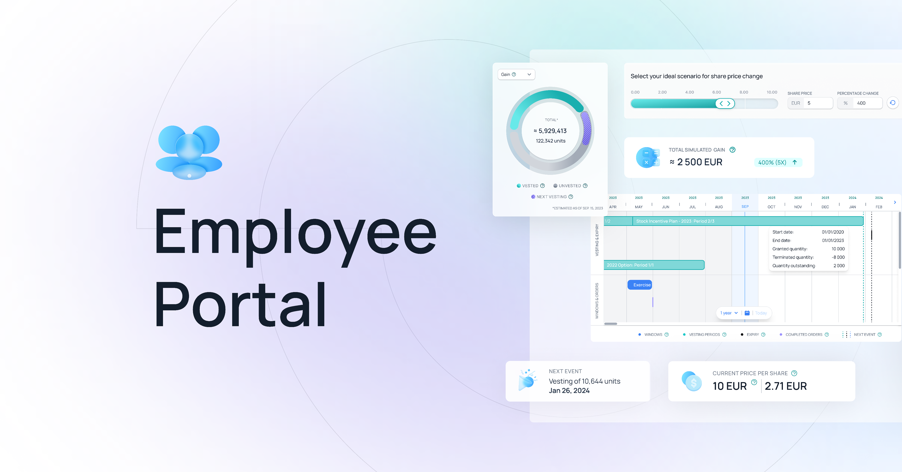
When I joined, the portal was still being built, mostly for stock options, and the company was in the middle of a big redesign. Then more share types, markets and company rules arrived, and the portal started to crack.
Risky actions felt unsafe. People couldn’t see what they actually owned. And we had almost no direct insight from the people using it.
The old dashboard was built around a wheel that split your holding into cost and gain. Here’s what that wheel said for each share type:
There’s a strike price, so cost vs. gain means something.
✓ makes senseNo purchase cost, so the wheel is one colour and says nothing.
○ emptyThe share count depends on performance: zero, or double. One fixed value misleads.
✕ wrongYou already own them. There’s no cost and gain to split.
○ empty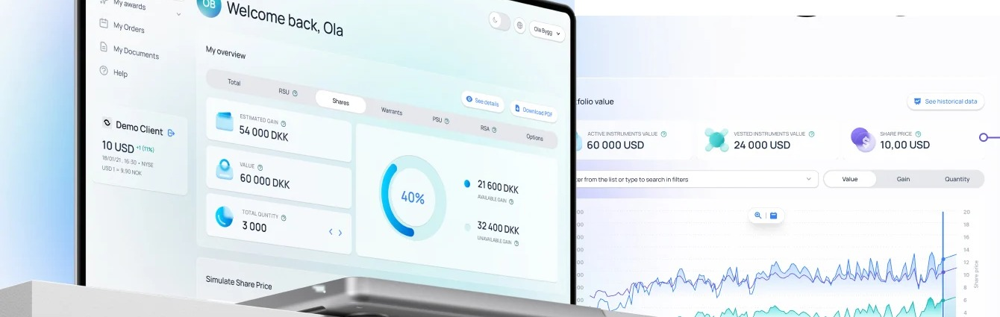
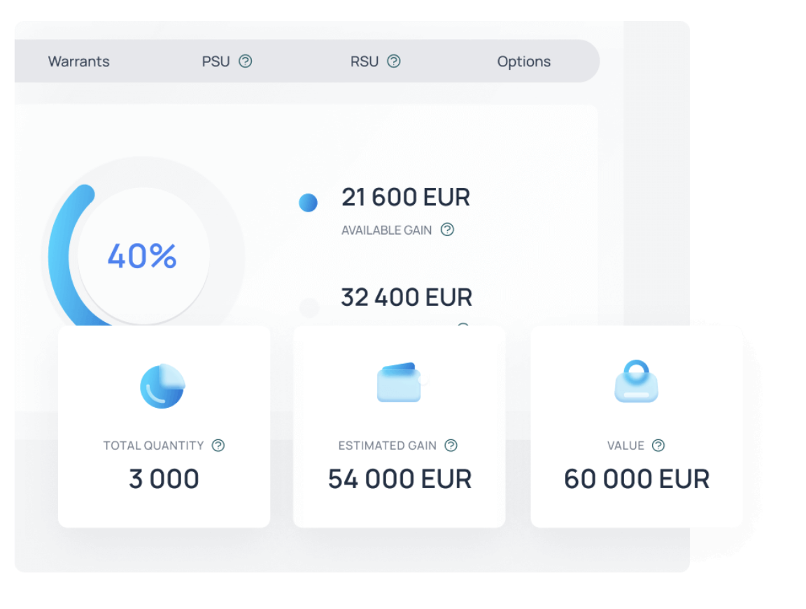
The original dashboard and its wheel, with a tab per share type.
Small on purpose: high impact, low cost. A quick fix went live first, and it bought time to gather insight for the real redesign.
Research wasn’t one big study. It was a steady drip of small ones. Most confirmed what the team suspected. One pattern changed everything: almost every visit started with “what do I have?” and “what should I do?”
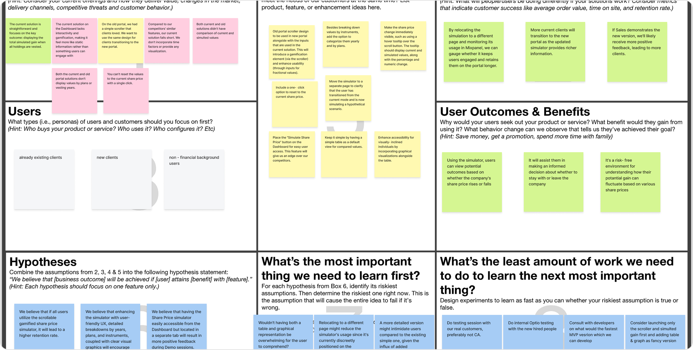
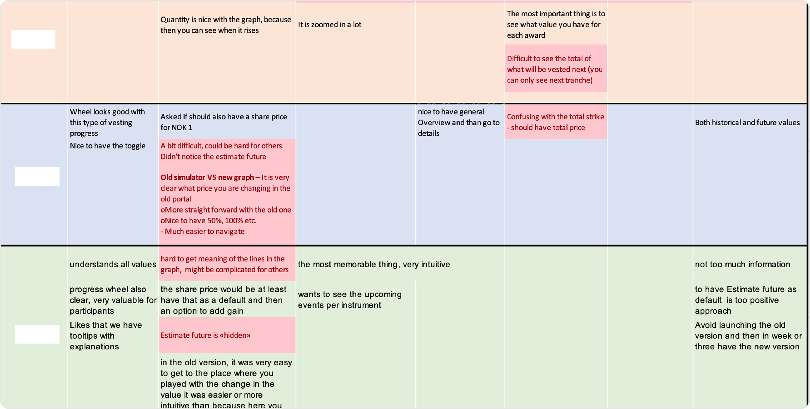
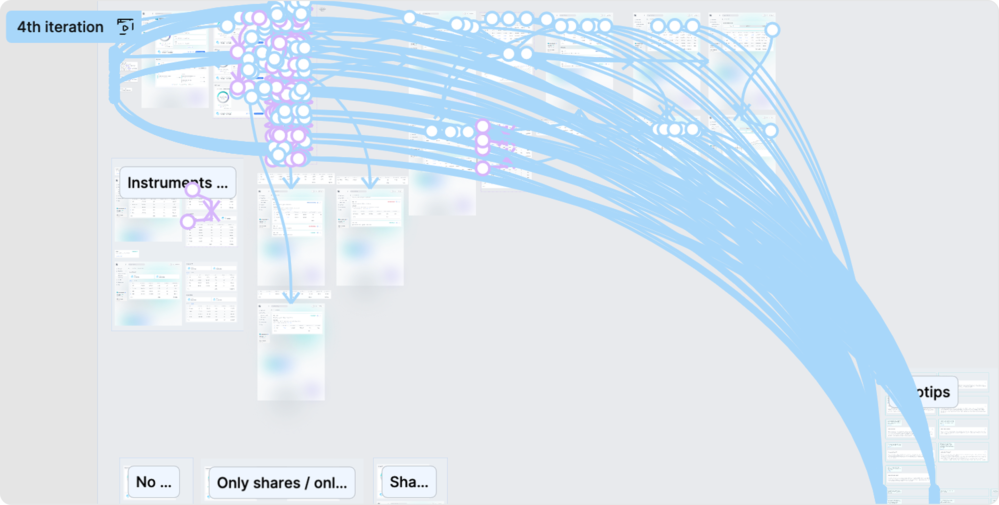
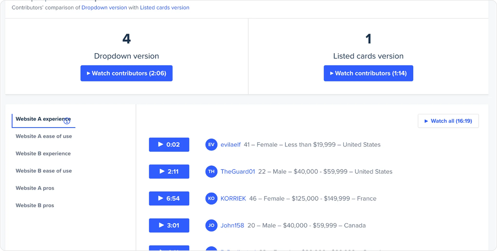
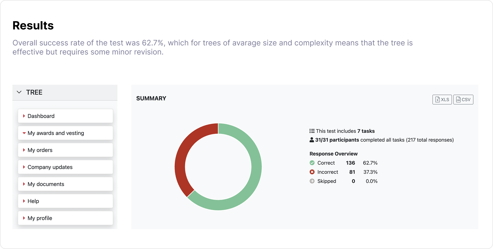
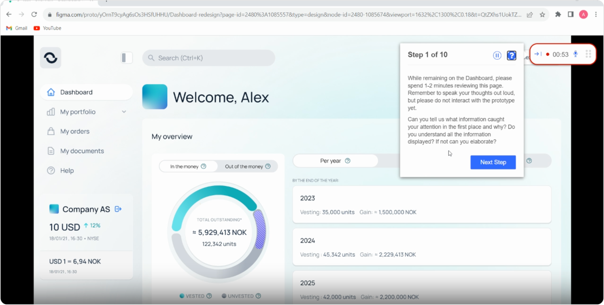
If part of the screen doesn’t help with “what do I have” or “what should I do”, it doesn’t earn its space.
Options, RSUs, PSUs, warrants or shares: the dashboard adapts to what each person actually holds, instead of pretending everything is an option.
It used to be a small widget for show. On its own page, with a slider, people could finally ask: what if the price goes up or down?
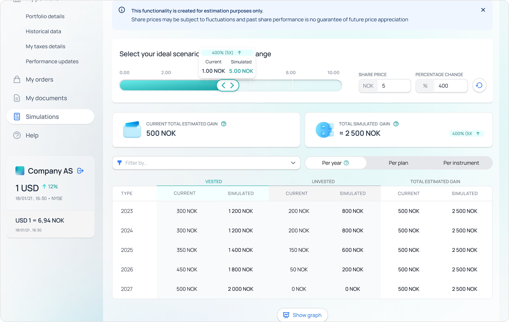
Clients can set their own wording, explanations and brand colours, while the portal keeps one shared design system. No one-off builds.
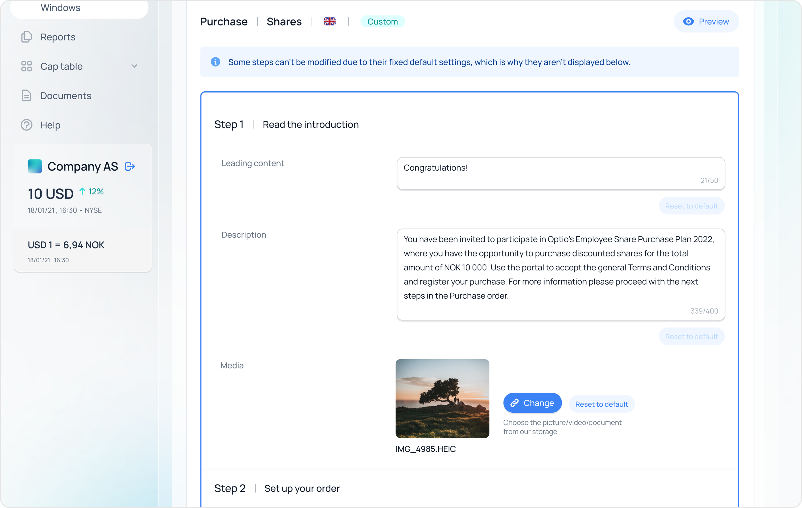
Mobile was low priority, but I used parts that adapt easily anyway. When the portal moved into the mobile app, the rollout shipped much faster.
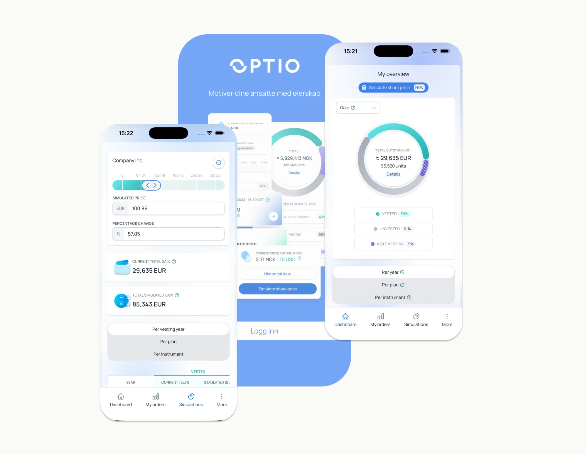

Most teams hear from users through Customer Success, support tickets and surveys. That’s a long chain with a lot of filtering. I argued for something shorter:
A small build with a big payoff. Within two months we had feedback we couldn’t get any other way, at the moment of the action.


One unsolved problem on the dashboard mattered to one client: Optio’s largest. They had explained it three times and were starting to sound like a customer with options.
The idea: ship the parts that fixed their pain inside releases we’d already promised, and move the rest later. Leadership said yes, and the roadmap stayed honest.
Same card-sorting exercise, two very different answers:
We shipped the users’ version. The first round cost us about three weeks I wouldn’t spend that way again.

One dashboard replaced five program-specific layouts. Six high-stakes actions now have previews, checks and clear states.
The product’s best month for positive feedback after the dashboard launched. The widget made that signal possible.
The biggest client stayed through a quarter that could have lost them. Customer Success spends less time explaining terms.

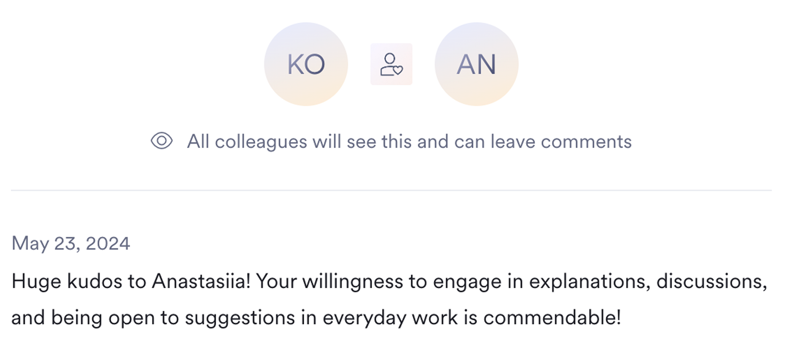